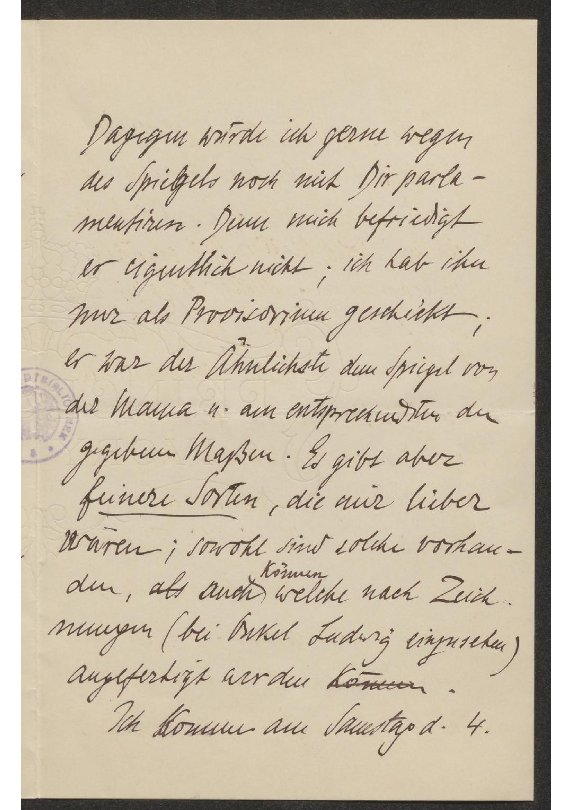

Dein letzter Brief war
sehr sehr lieb. Mutter und ich
waren freudig gerührt davon.
Ich gratuliregratuliere Dir auch von
Herzen zum Richard und wir
gratulirengratulieren uns zu ihm und freuen
uns Alle miteinander über ihn.
Mutter ist sehr erbaut und
beglückt über all die schönen
Zeitungsartikel, die ihr bis nun
in die Hände gekommen sind:
Vaterland, Neue Freie Presse, IllustritesIllustriertes
Extrablatt (mit Portrait). Ihr
werdet bewegte Tage gehabt haben
und noch haben. Von Dir hoffe
ich und hofft Mutter, Viel erzählt
zu bekommen. Mutter läßt Dir auch
sehr schon danken für Deinen
Brief und wir beide grüßen Dich
herzlich. Ich komme also am
Samstag in die Stadt und fahre
um 11 Uhr oder etwas später zu
Ludwig. Wenn Du wirklich Zeit hast,
wird es mich sehr freuen, dass
Du mit halten willst; solltest Du
aber doch schwer dazu kommen,
so heb Dir 's für später auf.

Dagegen würde ich gerne wegen
des Spielgels noch mit Dir parla-
mentiren. Denn mich befriedigt
er eigentlich nicht; ich hab ihn
nur als Provisorium geschickt;
er war der Ähnlichste dem Spiegel von
der Mama u. am entsprechendsten den
gegebene Maßen. Es gibt aber
feinere Sorten, die mir lieber
waren; sowohl sind solche vorhan-
den, als auch können welche nach Zeich
nungen (bei Bikel Ludwig einzusehen)
angefertigt werden können.
Ich komme am Samstag d.den 4.
Dagegen würde ich gerne wegen
des Spielgels noch mit Dir parla-
mentiren. Denn mich befriedigt
er eigentlich nicht; ich hab ihn
nur als Provisorium geschickt;
er war der Ähnlichste dem Spiegel von
der Mama u. am entsprechendsten den
gegebene Maßen. Es gibt aber
feinere Sorten, die mir lieber
waren; sowohl sind solche vorhan-
den, als auch können welche nach Zeich
nungen (bei Bikel Ludwig einzusehen)
angefertigt werden können.
Ich komme am Samstag d.den 4.
ungefähr um ¾10 in unsere
Wohnung; vorher habe ich ein
Kirchenamt mit Anna Baumgartner.
Dann habe ich Zeit.
Grüße mir auch die Buben
und Richard.